The Iterator Pattern
in Standard Template Library
Scope & goals
- Why was STL designed the way it was?
- C++ iterators walkthrough
- Custom iterators
- The next big step in the STL evolution
STL's design principles
Alexander Stepanov youtube.com/watch?v=COuHLky7E2Q
Bjarne Stroustroup stroustrup.com/rules.pdf
Jonathan Boccara fluentcpp.com/2017/04/18/the-design-of-the-stl
Separation of algorithms from the data structures
Generality and Specialization
What's an iterator?
- A container-traversal tool
- An object (with a specific API)
- Sort of a pointer to container's elements
What's so special about iterators?
- Separation of algorithms from the data structures
- Universal traversal method over a range of elements
- A single std::find() for all data structures instead of separate overloads for vector, map, set, deque,...
- Loose coupling between algorithms and containers
- Open-Closed Principle - extension of container's capabilities by new generic algorithms, not by modification of the containers themselves
Iterators-based approach
- Iterators-based approach makes the code look simpler
- Works for empty containers, single value or any number of elements
- No need to handle corner cases separately
- Enables writing generic and very simple code
- It can even handle past-the-end operations without a special check
Why iterators instead of containers?
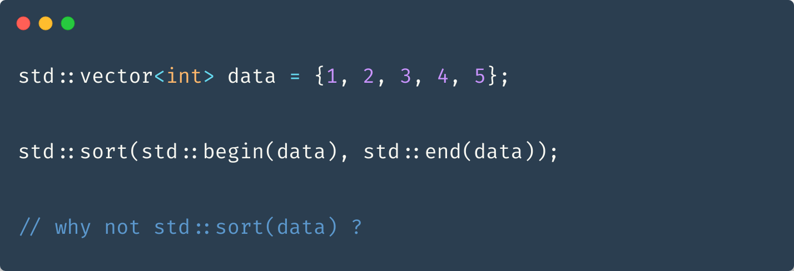- Flexibility
- Working with a subset of a container (range)
- Iterator adaptors & their composability
- Fewer algorithm overloads (find & reverse find)
Pitfall
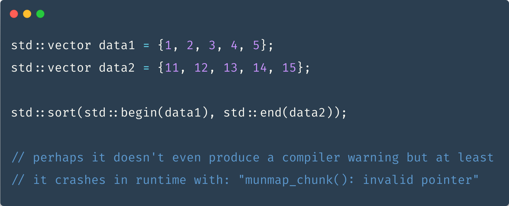Pointer semantics
of a C++ iterator
Iterator dereference

Dereferencing a past-the-end iterator is undefined behavior
en.cppreference.com/w/cpp/container/vector/endCustom iterator dereference
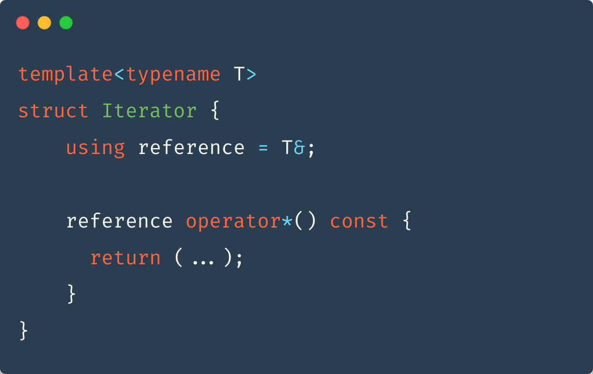Iterator's operator->()
Custom iterator's operator->()
why std::addressof()?
Iterator incrementation/decrementation

Custom iterator implementation
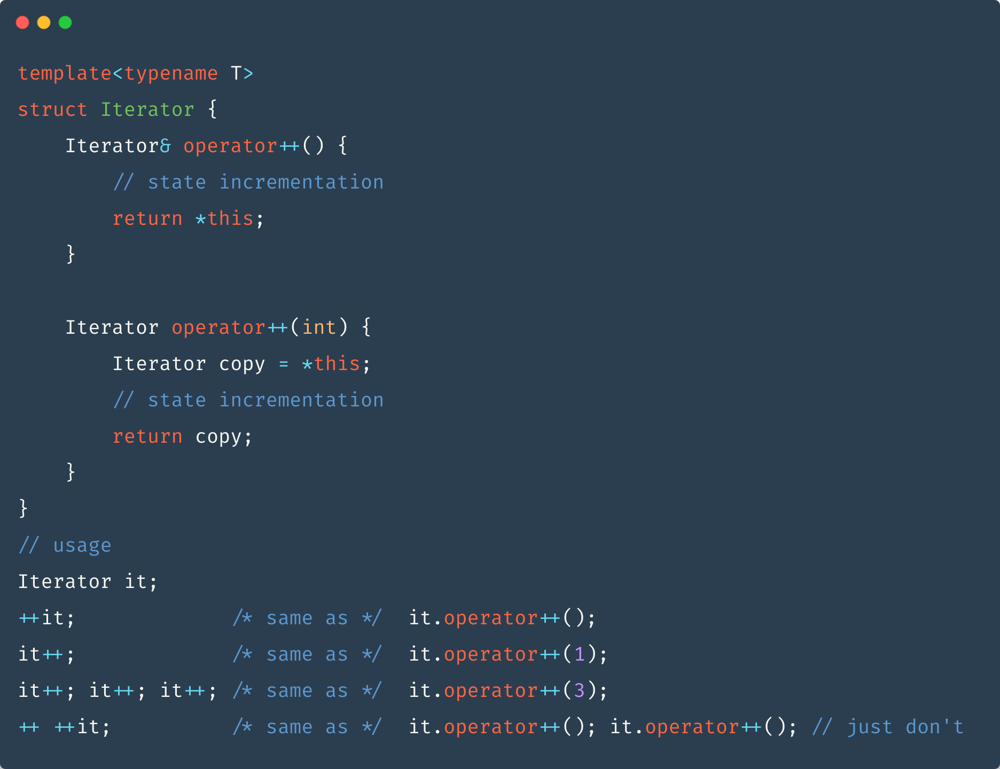Pointer semantics
makes STL algorithms applicable to containers but also to old-school arrays
A C++ raw pointer
meets all requirements of a
RandomAccessIteratorIterator categories
Named requirements
Written expectations about C++ types and objects
Used in the C++ standard to state those expectations
One requirement can be used to define another
Usually paired with some helpers that express those expectations in the code
en.cppreference.com/w/cpp/named_reqDefaultConstructible
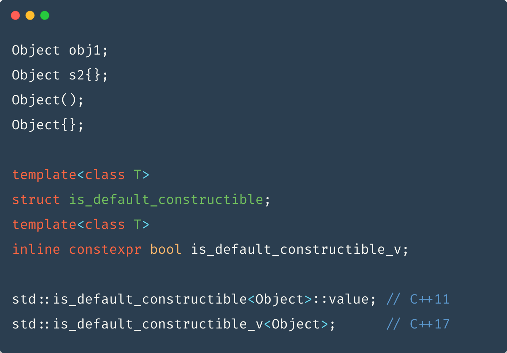
Predicate
Iterator categories
LegacyIterator
The base set of requirements for all iterators
- CopyConstructible
- CopyAssignable
- Destructible
- Swappable - std::swap, std::iter_swap
- std::iterator_traits<Iterator>
- *iter - dereferenceable (unspecified return value)
- ++iter - defined and returns Iterator&
std::iterator_traits<I>
LegacyInputIterator
- EqualityComparable
- i != j - valid expression
- *i returns reference from iterator_traits
- reference might be a proxy object
- operator->() is defined
- *it++ returns value_type
- intended for single-pass algorithms - std::find, std::count
Input iterators be like

src: meme-arsenal.com/memes/bda3710e8c0f496156f70ee6b76a6b36.jpg
LegacyForwardIterator
- DefaultConstructible
- std::iterator_traits<Iter>::reference defined as T& or const T&
- i++ returns Iterator (not Iterator& )
- *i++ returns reference
- Provides multipass guarantee
Multipass guarantee
Forward iterators be like

src: carbide-red.com/comp/double_drive.jpg
LegacyBidirectionalIterator
- --i returns Iterator&
- i-- return value convertible to const Iterator&
- *i-- returns reference
Used by std::map and std::set
But also std::reverse_copy and std::random_shuffle
LegacyRandomAccessIterator
- both {i += n}, {i -= n} return Iterator&
- The complexity of the expressions above is O(1)
- both {i + n}, {i - n} return Iterator
- i - j returns difference_type
- i[n] returns reference
- all comparison operators are defined
Used by std::vector
Iterator tags
Tag dispatch
std::advance() with input_iterator_tag

std::advance() with bidirectional_iterator_tag
std::advance() with random_access_iterator_tag
Iterator Concepts
ForwardIterator concept
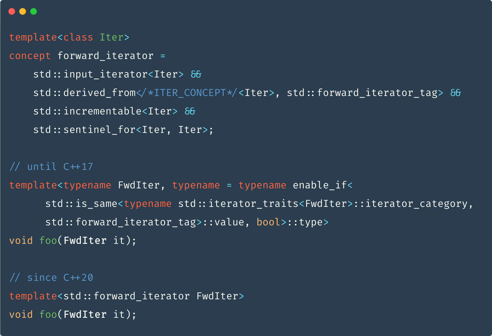Iterator related special functions
- advance
- next
- distance
- begin & end
std::advance
std::next
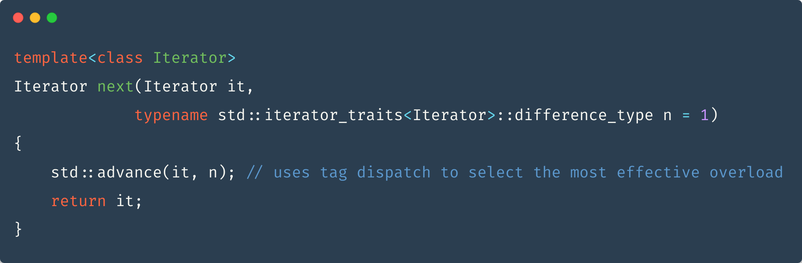std::distance
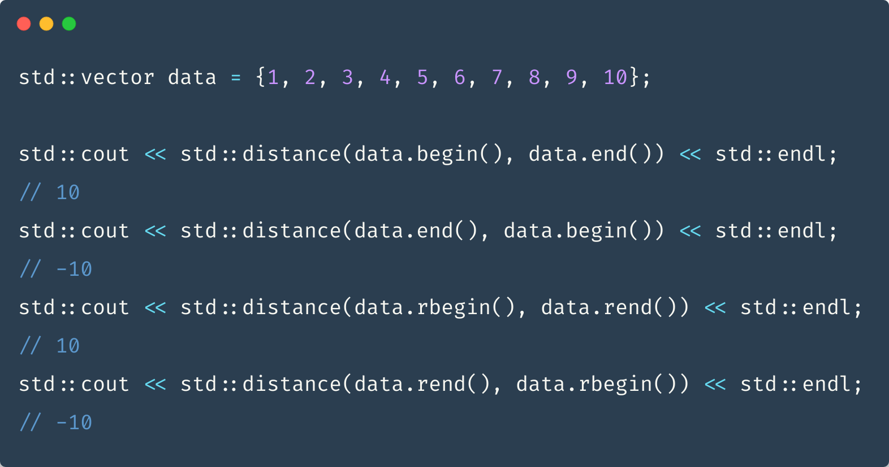std::begin() vs obj.begin()
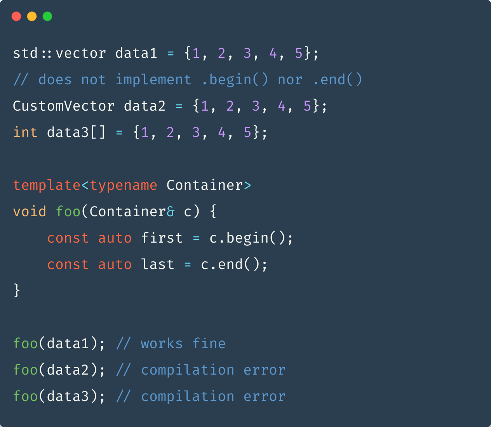ADL
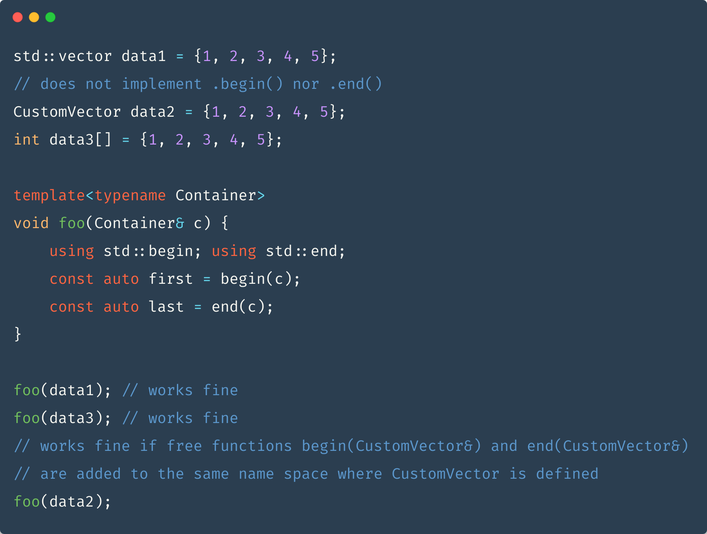The curious case of std::vector<bool>
std::basic_string to the rescue
Iterator adaptors
The decorator pattern
refactoring.guru/design-patterns/decorator- Preserves the interface
- Composable
C++ iterator adaptors
Simple printout
Squared printout
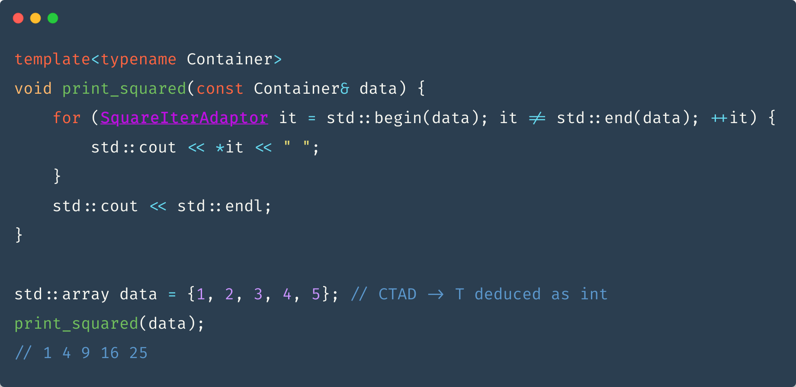struct SquareIterAdaptor
Squared printout with for-each
struct SquareElements
Composition of adaptors
Squared printout in reverse
struct ReverseOrder
#include <ranges>
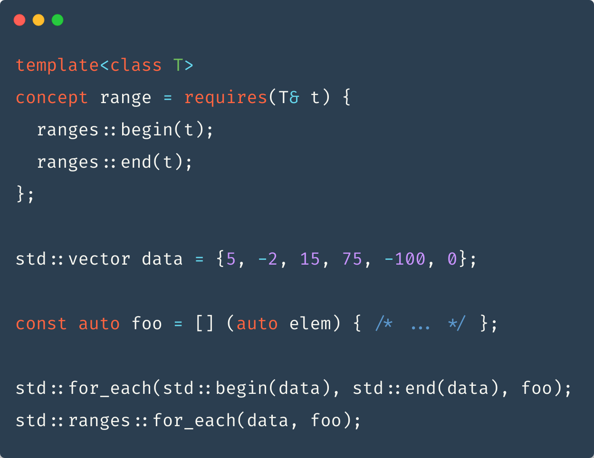The next level - range adaptors
More about ranges
hannes.hauswedell.net/post/2019/11/30/range_intromodernescpp.com/index.php/c-20-the-ranges-library
C++20 Ranges in Practice - Tristan Brindle
youtube.com/watch?v=d_E-VLyUnzcFrom STL to Ranges: Using Ranges Effectively - Jeff Garland
youtube.com/watch?v=vJ290qlAbbwgithub.com/ericniebler/range-v3
MaxPool

MaxPool algorithm
- For each output tensor element...
- Calculate the kernel position (top-left corner)
- Iterate over the kernel elements row-by-row
- Select the element with the maximum value
- Requires transformation of an element's 2D coordinate to an address in the flat tensor
Kernel position calculation
Kernel position calculation
(with padding)

Kernel position calculation
(with padding, strides and dilations)
MaxPool
(ugly) code time

std::max_element
Kernel::end()
MaxPool
std::transform std::max_element
std::span
Legacy approach